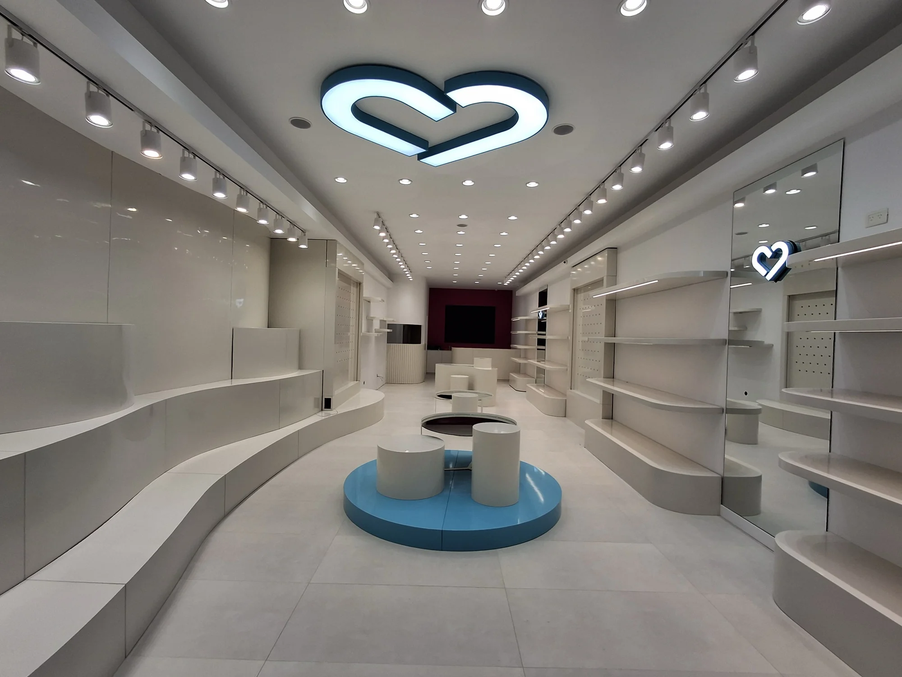
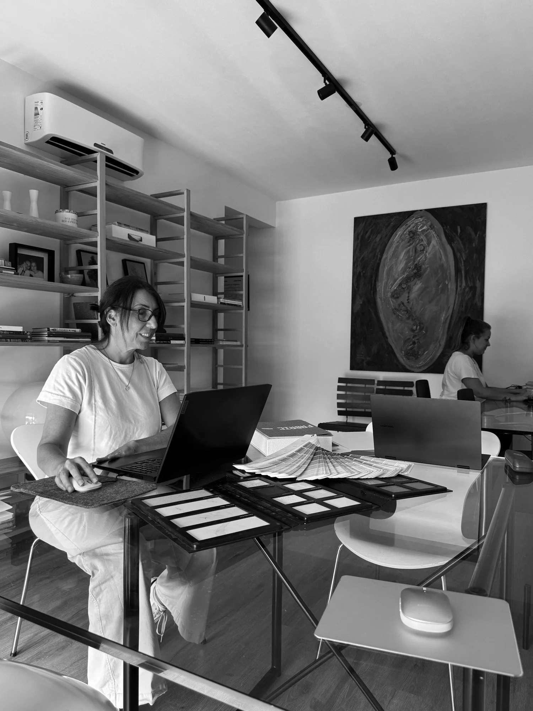

Conocer el proyecto
Conocer el proyecto
ARQUITECTURA COMERCIAL ESTRATÉGICA · BUENOS AIRES
Diseñamos espacios comerciales pensados para vender.
Diseño y remodelación de locales que conectan tu marca con la experiencia de compra. Del concepto a la obra.
01 / CÓMO PODEMOS AYUDARTE
Cada etapa de tu marca,
un espacio a su medida.
01
Un nuevo local
Del concepto de marca al espacio que recibe a tus clientes.
Diseño de locales comerciales02Un espacio que evoluciona
Repensamos tu local para acompañar la etapa actual de tu marca.
Remodelación de locales03Una marca, varios espacios
Un lenguaje reconocible para llevar tu marca a distintos locales.
Identidad espacial para retail02 / PROYECTOS
Marcas que toman forma.
Tres espacios comerciales. Tres identidades distintas.
¿Buscás una solución para tu marca? Conversemos sobre tu espacio
ESTRATEGIA, FUNCIONALIDAD Y ESTÉTICA
Tu identidad de marca,
en cada decisión.
La circulación, la exhibición y los materiales construyen la experiencia de un local. Los pensamos en conjunto para que el espacio acompañe a tu negocio.
Hablemos de tu proyecto
03 / EL PROCESO
Del primer encuentro
al espacio construido.
Diagnóstico
Conversamos sobre tu marca, el espacio, los objetivos y los tiempos del proyecto.
Un punto de partida compartido.Propuesta
Definimos una estrategia y el alcance de trabajo según las necesidades del local.
Una propuesta de trabajo para evaluar.Diseño
Desarrollamos la distribución, la exhibición, la materialidad y el lenguaje del espacio.
Una propuesta espacial alineada a tu marca.Desarrollo
Preparamos la documentación técnica de las decisiones de diseño.
La información necesaria para ejecutar.Ejecución
Acompañamos la obra y sus decisiones, cuidando el diseño, los tiempos y los costos.
Seguimiento según el alcance acordado.04 / EL ESTUDIO
Somos Fondamenta.
Un estudio de arquitectura enfocado en espacios comerciales para marcas de retail.
Combinamos estrategia, funcionalidad y estética para traducir la identidad de cada marca en una experiencia construida. Trabajamos de forma integral, desde el concepto hasta su materialización en obra.
Karin Falck
Arquitecta · Socia fundadora
Raquel Marrodan
Arquitecta · Socia fundadora
ANTES DE EMPEZAR
Algunas respuestas.
¿En qué momento conviene consultar?
Podés contactarnos si estás pensando en abrir un local, renovar uno existente o desarrollar la identidad espacial de tu marca. La primera conversación nos permite entender en qué etapa estás.
¿Necesito tener los metros y la fecha definidos?
No. Una estimación nos ayuda, pero podés indicar que todavía no lo sabés. Revisamos esos puntos al conversar sobre el proyecto.
¿Cómo se define el presupuesto del proyecto?
Se define según las necesidades del espacio y el alcance del trabajo. Contanos qué querés hacer para que podamos evaluar cómo acompañarte.
05 / TU PRÓXIMO ESPACIO
Todo empieza
con una conversación.
Contanos qué tenés en mente. No hace falta tener todas las respuestas para empezar.
Prefiero escribir por WhatsAppfondamentaestudio@gmail.com